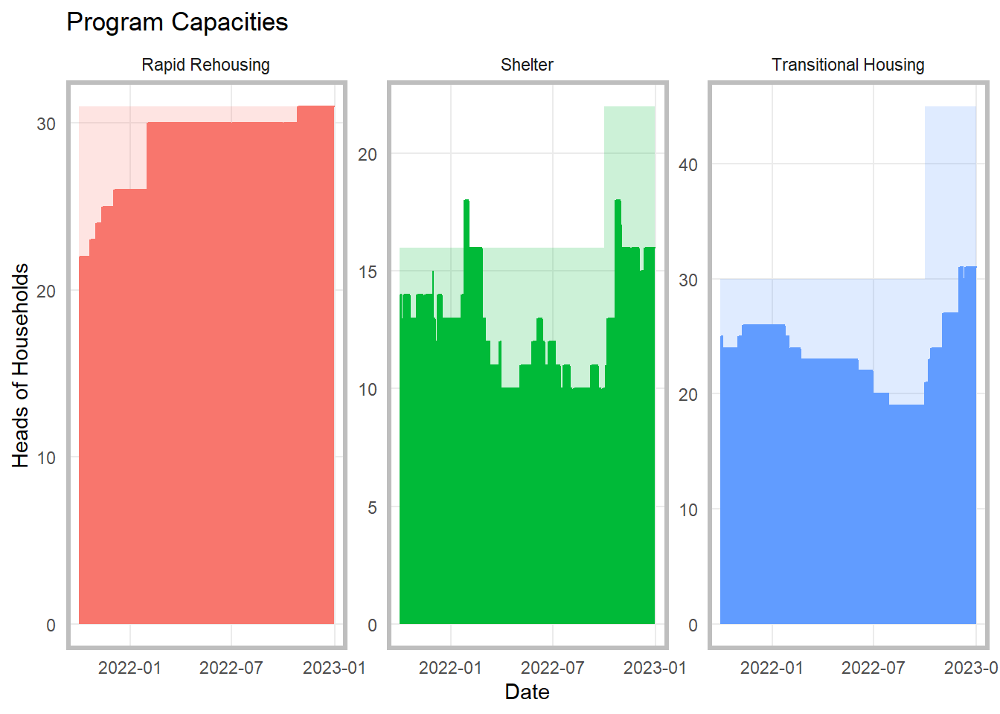

# A tibble: 124 x 4
admission_date client_id discharge_date location
<date> <dbl> <date> <chr>
1 2019-11-11 176 NA Transitional Housing
2 2019-11-18 405 NA Transitional Housing
3 2019-11-26 399 2022-01-31 Transitional Housing
4 2019-12-01 267 NA Transitional Housing
5 2019-12-19 363 2022-02-01 Shelter
6 2019-12-19 364 2022-02-01 Shelter
7 2020-01-01 202 2022-01-24 Transitional Housing
8 2020-01-08 301 NA Transitional Housing
9 2020-01-09 372 2022-03-31 Shelter
10 2020-02-01 716 2022-06-30 Transitional Housing
# ... with 114 more rowsProjects
Use the outline to the right to jump to a project.
R: Determining Capacity
Management at a DV organization wanted more information on whether or not they were running at full capacity so that they could strategize around serving the greatest number of clients.
Starting with a basic anonymized data set showing a client ID, admission date, exit date and program, like below:
Through a combination tidyverse, lubridate, data.table, and base R, I was able to reorganize the data:
library(data.table)
library(tidyverse)
library(lubridate)
#replace N/A in the discharge date column with a future date
stays$discharge_date <- stays$discharge_date %>%
replace_na(ymd(30230131))
# set df to data.table format
setDT(stays)
# Create a table with all dates
dt.dates <- data.table( date = seq(min(stays$admission_date), max(stays$discharge_date), by = "1 days") )
# perform overlap join
stays_ <- stays[dt.dates, .(date, client_id, location), on = .(admission_date <= date, discharge_date > date), nomatch = 0L]
#group the stays by location and date, summarize, and filter for the relevant time period, and create columns to show the max clients that could be served per day per program
client_by_date <- stays_ %>%
group_by(location, date) %>%
summarise(hoh = n()) %>%
filter(date >= ymd(20211001) & date <= ymd(20221231)) %>%
mutate(max_hoh = case_when(
location == "Shelter" & date <= ymd(20220930) ~ 16,
location == "Shelter" & date > ymd(20220930) ~ 22,
location == "Transitional Housing" & date <= ymd(20220930) ~ 30,
location == "Transitional Housing" & date > ymd(20220930) ~ 45,
location == "Rapid Rehousing" ~ 31
) , p_full = hoh/max_hoh)And create simple charts that show the capacity rate over time for each program:

GIS: Fig Trees
During the Covid Pandemic, I started taking more long walks around my neighborhood and noticed a surprising number of fig trees. I started mapped these trees. This is a work in progress, but the raw data is in a Google map here.
Tableau
You can find examples of my Tableau Dashboards and presentations on my personal Tableau Public.